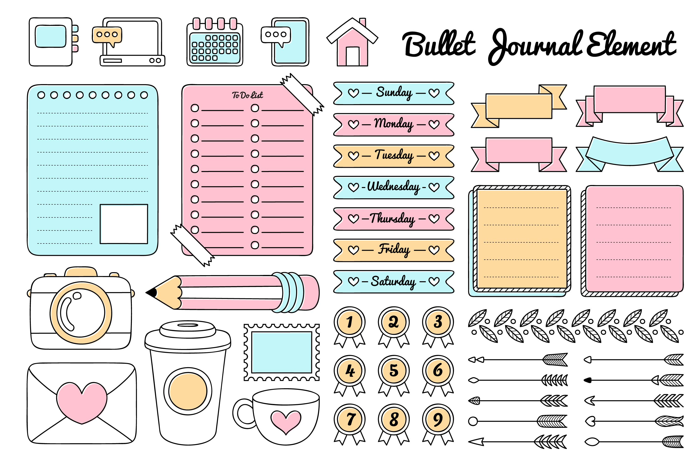

O que é journaling?
Como começar a praticar Journaling?
Benefícios do Journaling na organização pessoal
Journaling físico vs. digital
Conclusão
"Journaling" é uma espécie de diário pessoal que vai além do diário simples, um Journal é estruturado de sua forma específica para maximizar seu próprio desenvolvimento, é algo que além de ser um grande apoio emocional da mesma forma que um diário convencional, ele também te permite organização e estrutura, você pode planejar seu dia, se organizar e se preparar de forma consciente.
Você pode utilizar um caderno pessoal para realizar essa prática ou comprar um Journal já estruturado para seu uso, no meu caso pessoal, eu utilizo um minicaderno que levo comigo para todo lugar. Em conjunto com uma caneta, eu consigo escrever a qualquer momento na frequência que desejo. Porém, para quem está iniciando com essa prática, estabelecer uma rotina inicial é o primeiro passo a ser feito se você deseja desfrutar dos benefícios de Journaling.

O mínimo necessário é um caderno (de preferência tamanho A5), uma caneta e uma rotina com horário fixo para você escrever sobre o seu dia, seus pensamentos, planos, organização, etc. Tudo de forma estruturada. Dedicando 20 minutos para escrever todos os dias, você desenvolve o hábito rapidamente e já aproveita dos benefícios.
No meu caso, utilizar Journaling solucionou um dos grande problemas que enfrento em situações onde minha rotina está particularmente corrida, eu não consigo priorizar tarefas corretamente. Em diversas situações eu acabo paralisando por razão da quantidade de coisas para fazer, e no fim consigo terminar nada. Porém, com Journaling, eu consigo estruturar meus pensamentos de forma lógica, que autoriza o meu cérebro a processar melhor as minhas prioridades, me organizar e preparar para realizar minhas tarefas do dia, tudo por realizar uma simples anotação em menos de 5 minutos.
Eu pessoalmente acredito que essa prática, anotando em um caderno físico é consideravelmente melhor do que qualquer outra alternativa. Claro, também é possível digitalmente, porém especialmente para mim o ato de escrever em um caderno físico é uma ação muito mais consciente do que escrever e anotar em um computador.
Então, eu convido você a praticar Journaling comigo! 😊 Na aba a direita eu tenho diversos recursos online que valem muito a pena serem verificados antes de iniciar essa prática, pois irão servir como pontapé inicial para você ter sua própria estruturação antes de começar a anotar realmente. O mais importante de tudo é consistência, siga a rotina, e realmente preste atenção no que você esteja escrevendo. É algo simples que não custa nada tentar, então por que não começar agora?
Imagens retiradas de https://www.freepik.com
1: Um vídeo excelente ,detalha como Journaling afetou ela pessoalmente, seus hábitos, e como ela utiliza a prática
2: Um vídeo ensinando sobre a prática de Journaling e seus benefícios pela perspectiva de um psicólogo!
3: Um vídeo incrivelmente simples para iniciar, marca algumas rotinas para você seguir.